- One click on the difference will select it in the structure merge viewer (top viewer). Double click on it to open the content merge viewer related to this difference.
 .
.
The aim of this tutorial is to guide you through the basic mechanisms of EMF Compare. The first part of this tutorial will explain you how to set up your environment. The second will help you to have a better understanding of the main differences that EMF Compare detects. The third part will explain you how EGit can interoperate with EMF Compare to compare model from a git repository.
EMF Compare is part of the Eclipse release train. You will find all you need in the eclipse release update of your platform. You can also find newer version on EMF Compare web site in the download section.
In order to install EMF Compare:
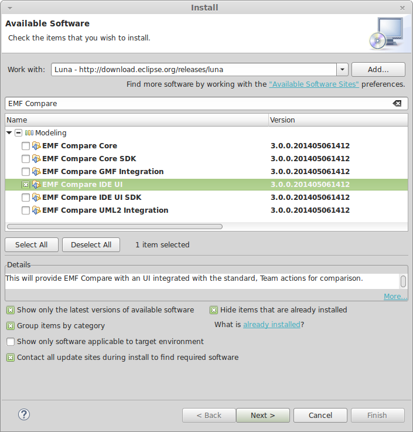
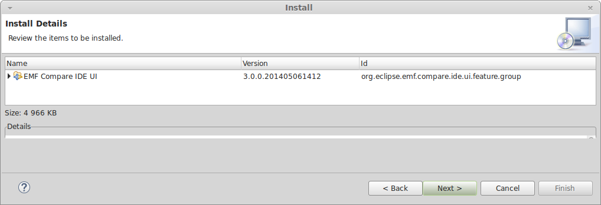
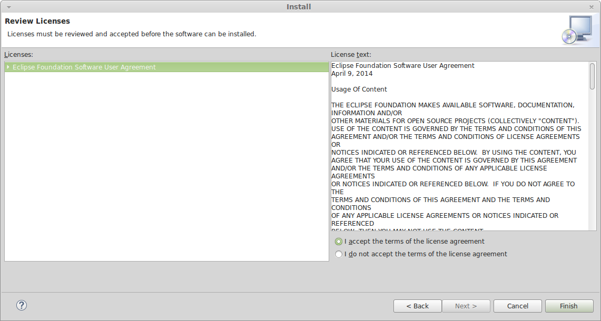
This tutorial is based on the well know ExtLibrary meta-model (available from the EMF examples). However for the needs of this tutorial we have customized those plugins. We have:
Those plugins are hosted in the EMF Compare repository. To import those plugins in your workspace you can follow the EGit tutorial. Here are the main steps:
In the end you should have your workspace looking like this:
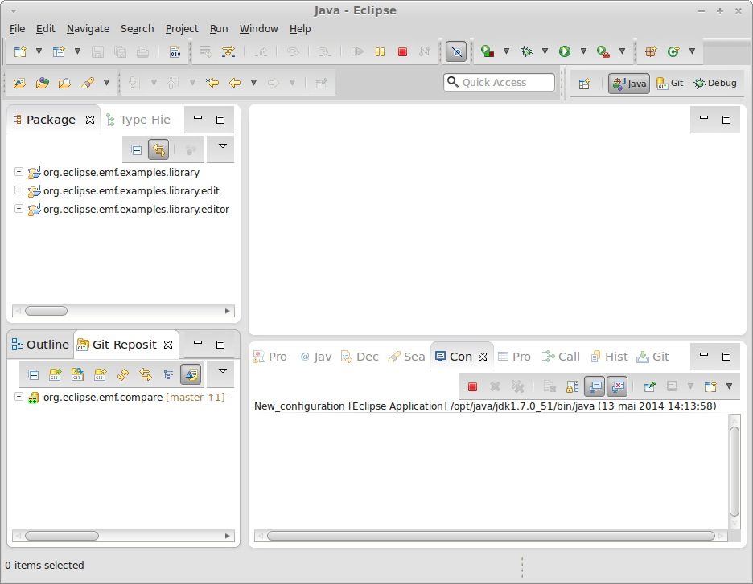
Now that you get all you need in your workspace, you need to create a runtime platform. A runtime platform is basically a new eclipse platform built upon your current platform with the new plugins of your workspace included. To do so:
All the following instructions should be done on the runtime platform.
EMF Compare editor is based on Content types mechanism. Basically, EMF Compare will be used in a comparison if the Content type of the current resource is either one of the following type (or inherit from one of them):
You can also use the "Content Types" preference page to associate your model files with EMF Compare content type.
This is the first step of this tutorial. To do so:
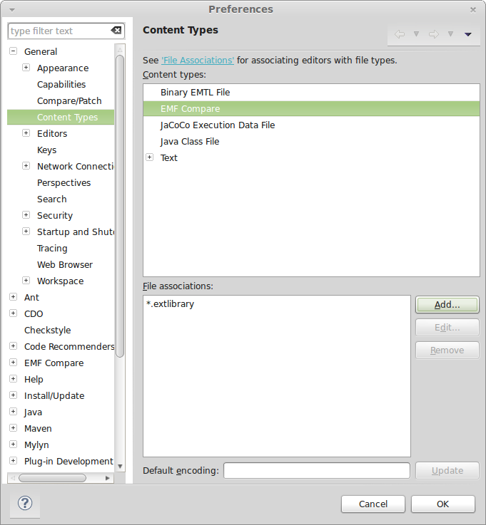
If you are using the basic EXTLibrary plugins (imported from examples) this step is not mandatory since a content type is already defined and it inherits from XMI content type. However those plugins do not generate ids so we do not recommend you to use them.
If you have correctly followed the previous steps you should have the following environment:
Now that everything is set up, we are going to go through all major differences that EMF Compare detects and handles. To do so we are going to create step by step a library model. Each time that you will modify your library we are going to compare it with a previous version to see how EMF Compare handles each difference.
First we need to create our library model. To do so:
Your model is now open.
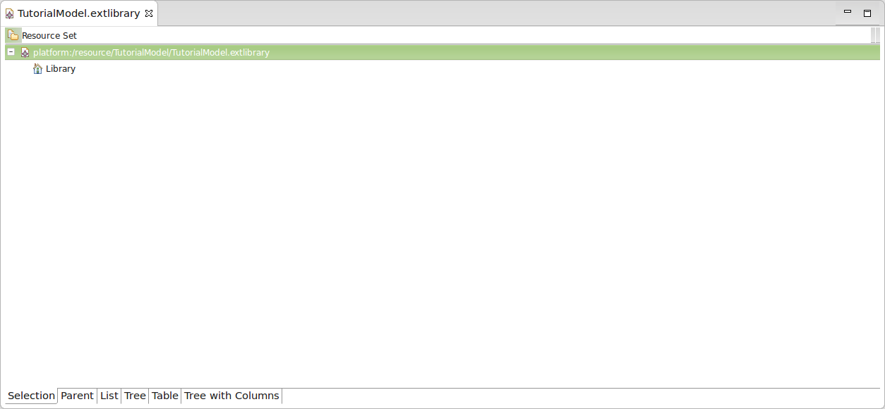
We are now going to fill your library with your first book.
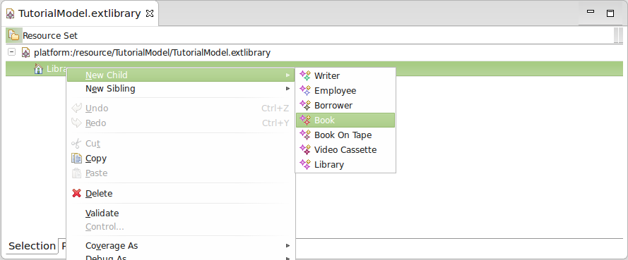
Now that our library contains one book let's compare it with the previous state of our model:
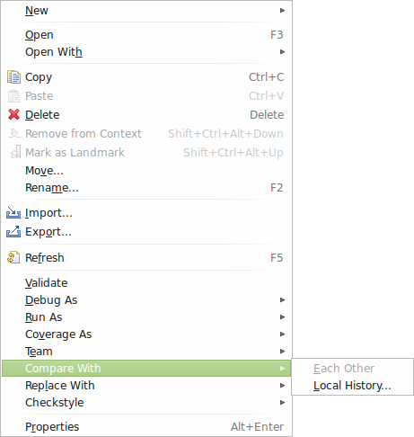
The history view is now open.
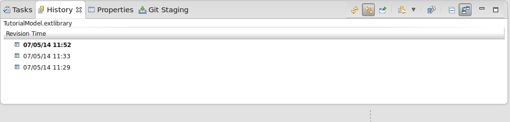
This view will display each state of the file that Eclipse has saved for you. Each time you will save your model a new entry will appear. The item written in bold is the current version of your file. In the first part of this tutorial you will have to compare the current version of your model with it's previous version.
To do so, double click on the entry just bellow the bold entry.
The EMF Compare editor is now open.
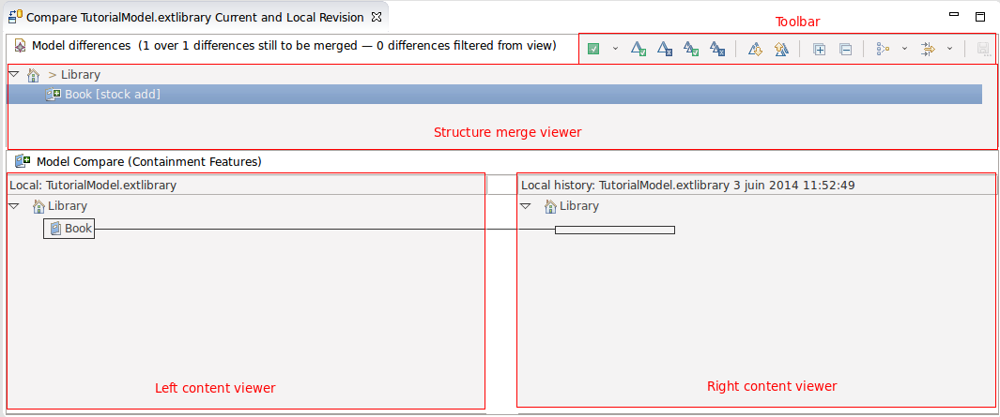
This comparison is a 2-way comparison. That is to say the comparison is only between 2 inputs (the current version of your file and the previous version from your local history). You will see in the second part of this tutorial that there is also a 3-way comparison.
Let's have a look at the user interface. The tool bar look like this:
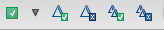
This toolbar appears when you are in accept/reject mode. This mode is activated when at least one of the input is not writable. In our example the current version of your file can be modified whereas the previous version of it can not (since it provided by the local history). In this mode you can accept or reject a difference. This is obvious but the only resource that is going to be modified is the current version of your model.
The top of the editor is filled with the "Structure Merge viewer". In it, you will find a structured representation of all differences that EMF Compare has found.
On the bottom of the editor you have a viewer called "Content viewer". This viewer displays the content of your input models. On the left, it displays the content of the current version of your model. On the right it displays the content of the previous version.
To have a full understanding of the user interface please see User Interface Breakdown.
Now let's have a look to the difference: 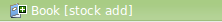
On this difference you find some pieces of information:
In this tutorial, you should never save the EMF Compare editor except if it is explicitly asked. For the moment, EMF Compare does not allow undoing an action if the model has been saved. Since we are going to go through every possible action we are going to make a lot of undo.
First accept the modification we have just created. To do so:
.
Your editor should look like this:
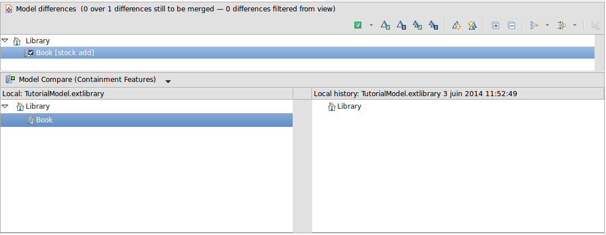
A new overlay icon has appeared on the difference. It means that the difference has been merged. You can also notice in the content viewer of the current model version that the book is no more framed. This also means that the difference has been merged.
Let's try to reject the difference:
Your editor should look like this:
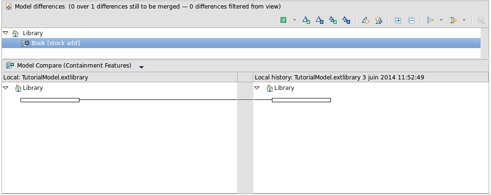
The "x" overlay on the difference icon means that it has been rejected. In the content viewer of the current model version the book has disappeared. Indeed, since the modification has been rejected the previous version of this object is used.
We are now going to set the name of the book we have just created. This will change the value of the attribute "Title" to "Prelude to Foundation".
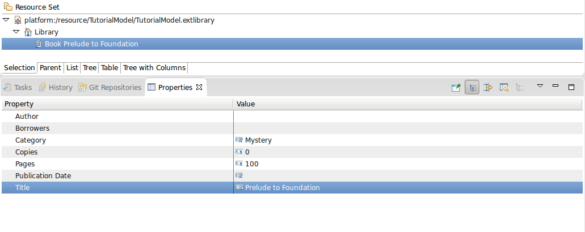
Now let's compare it with previous version (see previous chapter for explanation Compare with previous version).
On the difference you see the overlay indicating that this difference is a change. This difference is a set on the feature "Title". If you look on the content viewer of the current version, you will see the new value of the feature whereas in the previous version nothing is displayed.
If you accept the difference you will notice the same effect than in the previous chapter (see Accept a difference).
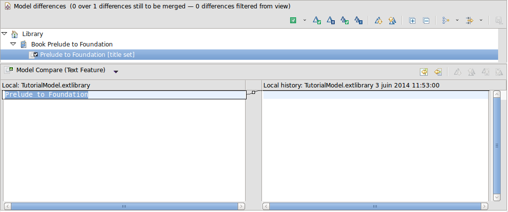
If you reject the difference the name of the book will be unset since it has not been set in the previous version (see Reject a difference).
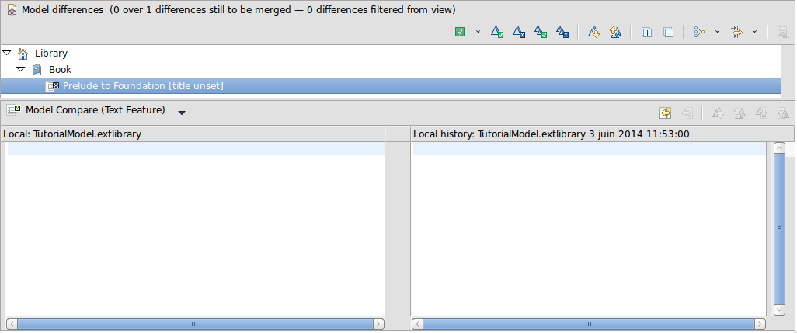
We are going to define that this book is a Science Fiction book. This will change the value of the "Category" feature of the book from its default value "Mystery" to "ScienceFiction".
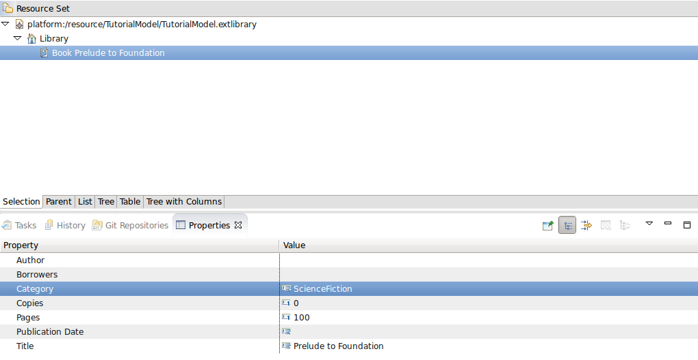
Now let's compare it with its previous version (see previous chapter for explanation Compare with previous version).
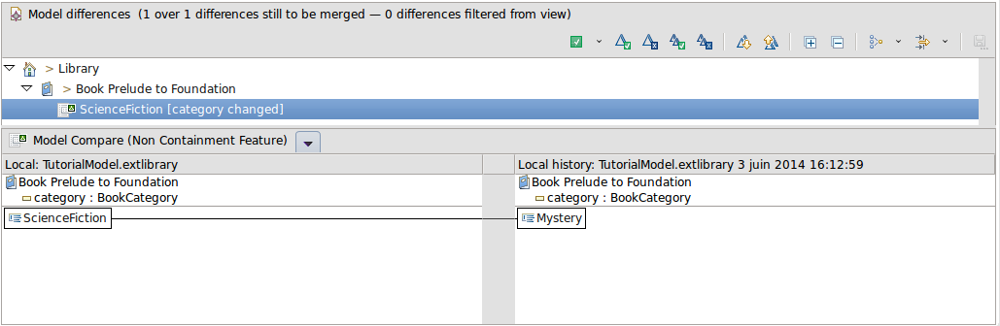
On the content viewer of the current version you see the new value of the feature "Category" whereas in the previous version the default value is displayed.
Accept the difference and you obviously see (see Accept the difference):
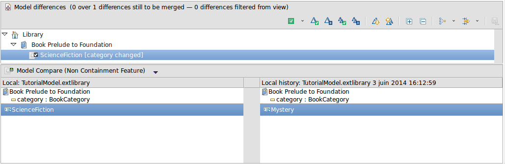
Reject the difference to set the "Category" feature to it's default value (see Reject a difference).
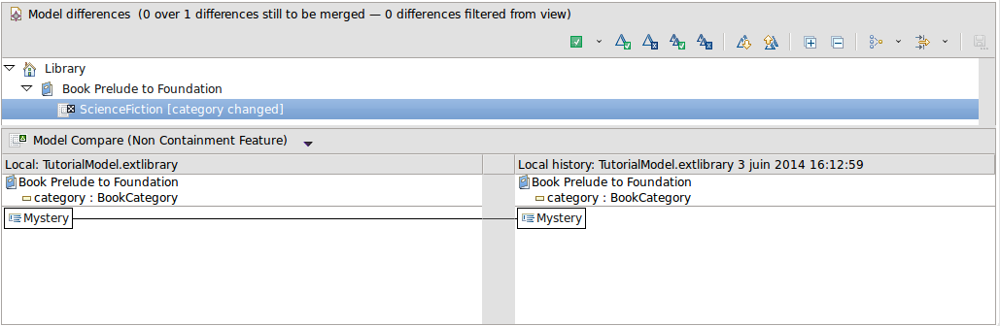
To fill your library we are going to add some employees.
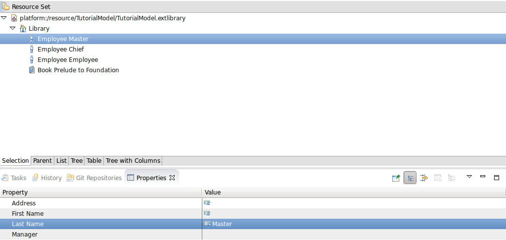
For this step we are not going to compare with the previous version of the model. EXTLibrary stores persons in feature maps. For the moment feature maps are not correctly handled by EMF Compare. Features map comparison will be integrated for the next Eclipse release (Mars in 2015).
Let's set the manager of "Employee" to "Chief". This will set the reference "Manager" of "Employee" to "Chief".
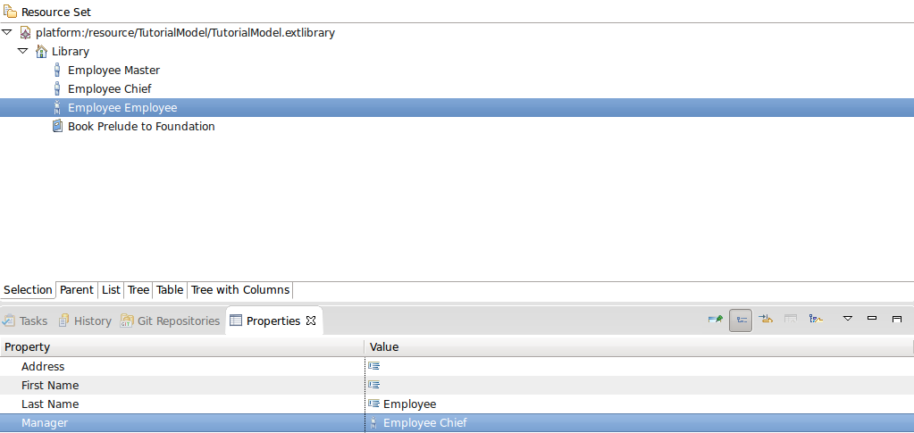
Now let's compare it with its previous version (see previous chapter for explanation Compare with previous version).
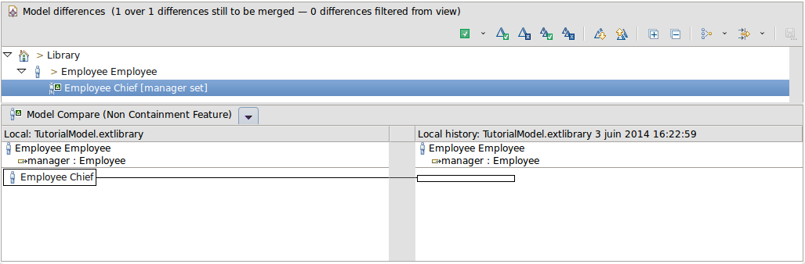
You can notice the change in the content viewer. However it is slightly different from the previous comparison. In the content viewer, you now have a new top image.
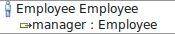
It means that the current difference is a non containment reference. If you look back to Compare with previous version the content viewer is not the same since the feature involved was a containment reference.
Accept this difference and you will see the same type of result than Accept a difference.
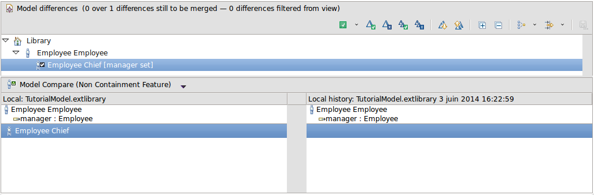
Reject this difference and you will see the same type of result than Reject a difference.
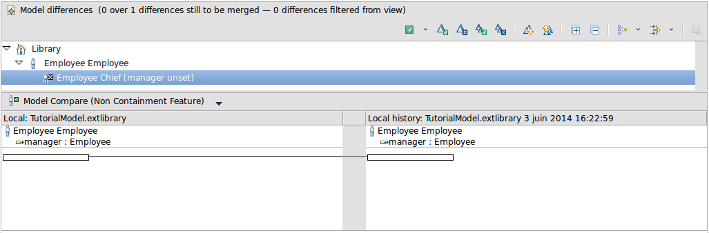
Let's say "Employee" has a new job and so he has a new manager. We have to change the feature "Manager" from "Chief" to "Master".
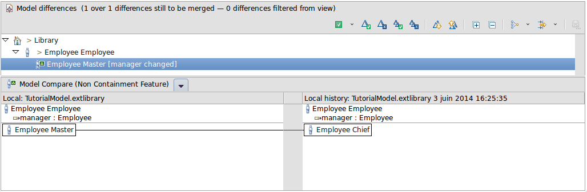
Accept the change to mark the difference as merged. Reject it to reset the manager of "Employee" to "Chief".
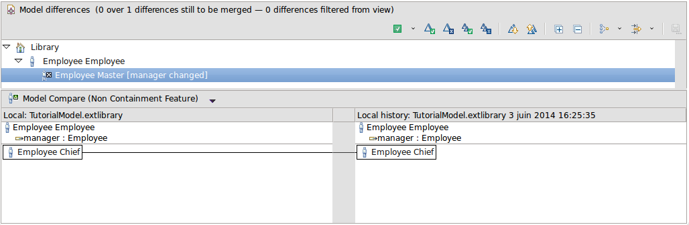
Let's say that "Employee" has reached the top of the command chain. That is to say he has no more manager.
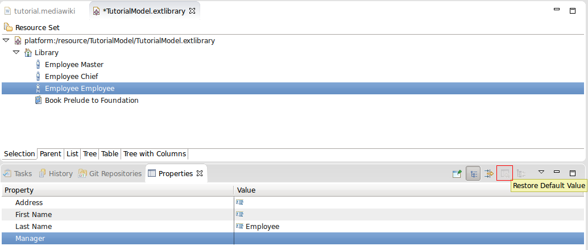
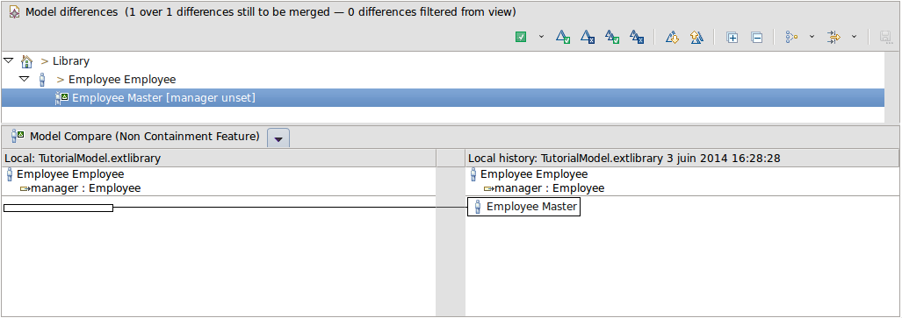
The difference is the opposite of set a manager.
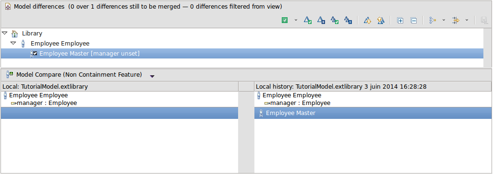
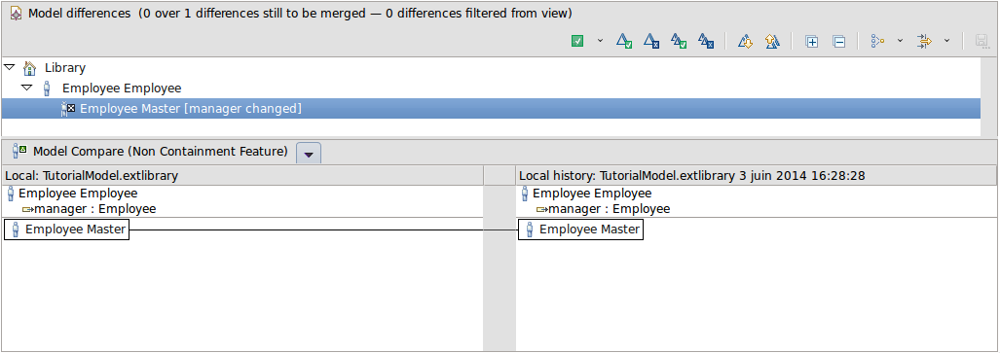
Let's open the gates of your library to the public. We are going to add borrowers to this library.
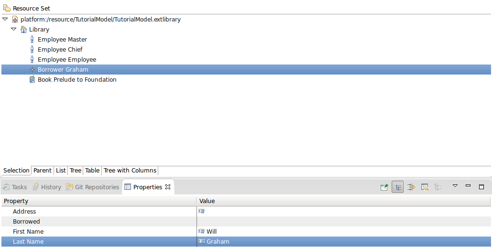
For the same reason explained in Fill the library with employees we are not going to compare the model this time.
We are going to use your newly created borrower by making him borrow "Prelude to foundation".
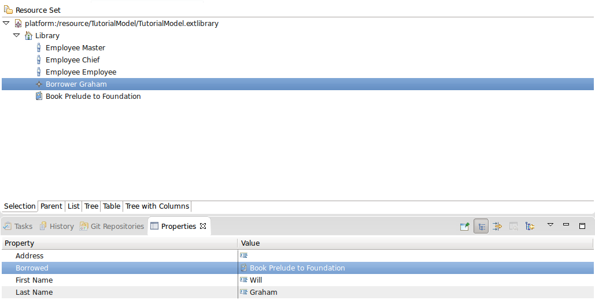
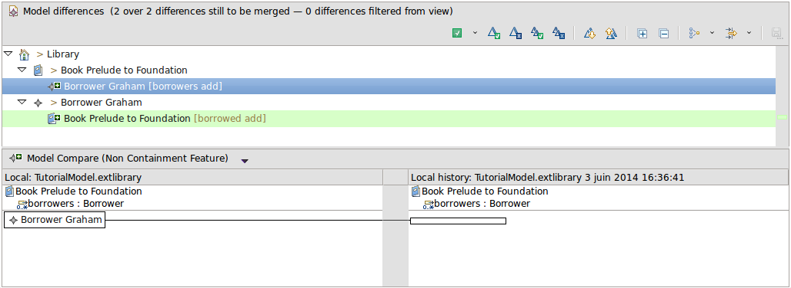
In this comparison you can notice two differences: and 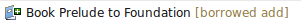. EMF Compare displays two differences whereas you have only made one modification in your model. The explanation is within the structure of the EXTlibrary metamodel. If you look on the feature "borrowed" in extlibrary.ecore you will see that the EOpposite field is set to "borrowers : Borrower".
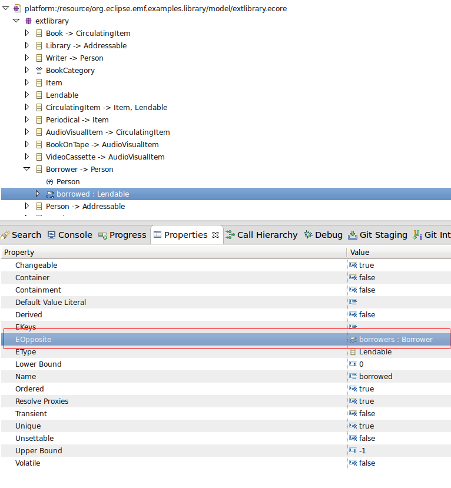
This means that each time you add/remove a book to a borrower EMF will automatically add/remove the borrower to the "borrower" features of the book (and the other way around). Modifying one feature will modify the other. It explains why EMF Compare see two differences.
Now you may wonder what happens when you accept one of the difference? EMF Compare give you a hint on this matter. First notice the consequences preview button 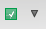. It can either have its icon set to for "Accept preview mode" or for "Reject preview mode".
When the "Accept preview mode" is activated ( ), EMF Compare will help you to understand the consequences of accepting the current selected difference. Let's try it.
Notice that "Book Prelude to Foundation [borrower add]" difference is highlighted in green. This means that accepting the current difference will automatically accept this difference too. Those two differences are linked by an "Equivalence" element meaning that merging one is equivalent to merge the other. You can reproduce the same behavior by selecting the difference "Book Prelude to Foundation [borrower add]" instead of "Borrower Graham [borrowers add]".
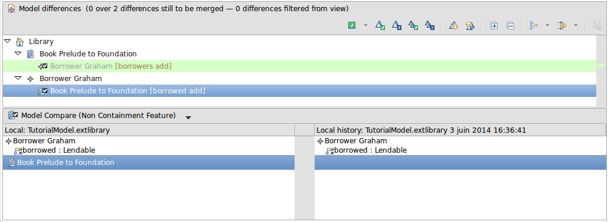
Both differences have been accepted. Now let's try to reject the difference.
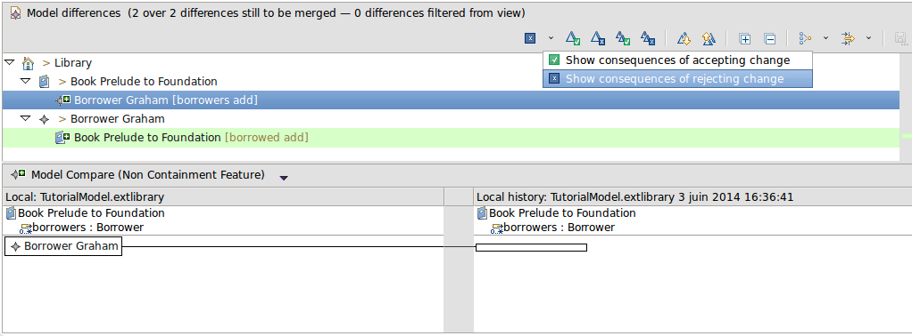
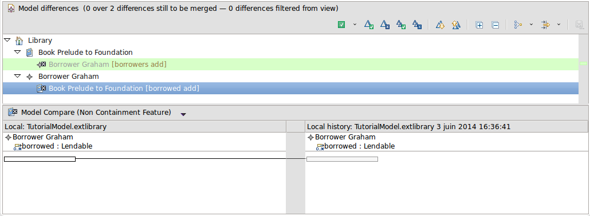
Both differences have been rejected.
Now that's your library is growing, let's create a new branch in your library. This new library will be affiliated to the main entity but will have an independent live.
EMF Compare displays only one difference whereas you have made two modifications. You have created one sub library and one book. There must be a connection between those two differences... Indeed without the library it's impossible to create the book "1984" since it is included in the new library. That's why by default EMF Compare does not display the two differences.
EMF Compare has accepted both differences. It has created the new library and the new book. On the contrary if you reject the difference.
EMF Compare rejects both differences.
In some use cases it can be useful to display both differences. For example if we would like to accept the creation of the library but reject the creation of the book. To do so, you have to use the filter button ( see Filtering Differences for further information).
Once the filter has been deactivated you will see both differences. Now you can merge separately each difference.
Notice that the library difference is highlighted. Indeed, merging the book difference will necessarily merge the library difference.
In this mode the other difference is not highlighted. Indeed, you can reject the creation of the book without rejecting the creation of the library. In the same way, selecting the library difference while "Reject preview mode" is activated will highlight the book difference. If the library does not exist then the book can not exist.
In order to fill the new library we are going to give it one book from the main library.
With this example we have introduced a new type of change: "moving an element". That is to say the element existed in the previous version but was located in a different place. In the content viewer you can see the location of this element in the current and previous versions of your model.
After an accident the book "1984" has to be removed from the shelves.
This kind of change is the opposite of an addition. Accept the change to mark the difference as merged.
Reject it to add the book back into the library.